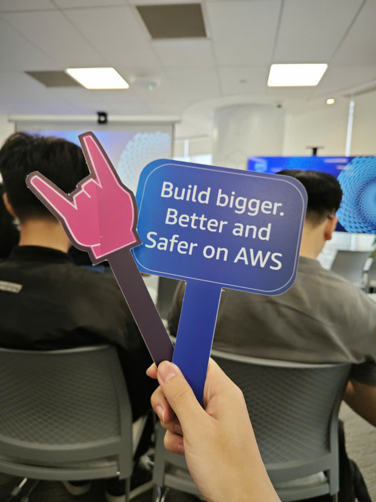

Event 1
Bài thu hoạch “Vietnam Cloud Day 2025 : Ho Chi Minh City Connect Edition for Builders”
Giới thiệu chung
Vietnam Cloud Day 2025: Ho Chi Minh City Connect Edition for Builders là sự kiện do Amazon Web Services (AWS) tổ chức, nhằm kết nối cộng đồng kỹ sư, nhà phát triển (builders) và kiến trúc sư hệ thống tại khu vực phía Nam.
Sự kiện mang đến kiến thức, xu hướng và công cụ mới nhất trong việc xây dựng ứng dụng hiện đại trên nền tảng đám mây, đồng thời tạo điều kiện để cộng đồng builders giao lưu, học hỏi và chia sẻ kinh nghiệm thực tế.
Mục đích của sự kiện
- Chia sẻ best practices trong thiết kế và phát triển ứng dụng hiện đại.
- Giới thiệu Domain-Driven Design (DDD) và Event-Driven Architecture (EDA) – hai phương pháp thiết kế ứng dụng tiên tiến.
- Hướng dẫn lựa chọn compute service phù hợp, tối ưu hiệu năng và chi phí.
- Giới thiệu Amazon Q Developer – công cụ AI hỗ trợ toàn bộ vòng đời phát triển phần mềm (SDLC).
- Kết nối cộng đồng builders tại TP. Hồ Chí Minh – những người không thể tham dự phiên chính ở Hà Nội.
Danh sách diễn giả
- Jignesh Shah – Director, Open Source Databases, AWS
- Erica Liu – Sr. GTM Specialist, App Modernization
- Fabrianne Effendi – Associate Specialist SA, Serverless, AWS
Nội dung nổi bật
1. Thách thức của kiến trúc ứng dụng truyền thống
- Chu kỳ phát hành sản phẩm chậm → Mất cơ hội kinh doanh
- Hệ thống hoạt động kém hiệu quả → Tăng chi phí, giảm năng suất
- Không tuân thủ quy định bảo mật → Ảnh hưởng uy tín và an toàn dữ liệu
2. Chuyển đổi sang kiến trúc Microservices
- Ứng dụng được chia thành các dịch vụ độc lập (independent services) giao tiếp thông qua sự kiện (event).
- Ba trụ cột chính:
- Queue Management – xử lý tác vụ bất đồng bộ
- Caching Strategy – tối ưu hiệu năng
- Message Handling – giao tiếp linh hoạt giữa các service
3. Domain-Driven Design (DDD)
- 4 bước thiết kế: xác định domain events → sắp xếp timeline → xác định actors → xác định bounded contexts
- Case study bookstore: minh họa cách áp dụng DDD trong thực tế
- Context mapping: 7 mẫu tích hợp bounded contexts
4. Event-Driven Architecture (EDA)
- 3 mô hình tích hợp: Publish/Subscribe, Point-to-Point, Streaming
- Lợi ích: giảm coupling, tăng scalability và resilience
- So sánh synchronous vs asynchronous – hiểu rõ sự đánh đổi (trade-offs)
5. Compute Evolution
- Diễn tiến từ EC2 → ECS → Fargate → Lambda theo mô hình Shared Responsibility
- Serverless benefits: không quản lý hạ tầng, tự động mở rộng, trả phí theo giá trị sử dụng
- Functions vs Containers: tiêu chí lựa chọn phù hợp
6. Amazon Q Developer
- SDLC automation: tự động hóa từ giai đoạn planning đến maintenance
- Code transformation: nâng cấp Java, .NET, và hiện đại hóa ứng dụng
- AWS Transform Agents: hỗ trợ migration từ VMware, Mainframe, .NET
Những gì học được
Tư duy thiết kế
- Business-first approach: bắt đầu từ nhu cầu kinh doanh, không phải công nghệ
- Ubiquitous language: xây dựng ngôn ngữ chung giữa business và kỹ thuật
- Bounded contexts: chia tách hệ thống lớn thành các phần dễ quản lý
Kiến trúc kỹ thuật
- Thực hành Event Storming để mô hình hóa quy trình nghiệp vụ
- Áp dụng Event-driven communication thay vì synchronous calls
- Hiểu rõ integration patterns: sync, async, pub/sub, streaming
- Biết cách chọn compute spectrum: VM → container → serverless
Chiến lược hiện đại hóa
- Phased approach: triển khai theo giai đoạn, có roadmap rõ ràng
- 7Rs framework: chọn chiến lược phù hợp cho từng ứng dụng
- ROI measurement: đo lường hiệu quả qua chi phí và tốc độ kinh doanh
Ứng dụng vào công việc
- Áp dụng DDD cho dự án hiện tại: tổ chức event storming với team business
- Refactor microservices dựa trên bounded contexts
- Implement event-driven patterns: thay synchronous calls bằng async messaging
- Pilot serverless với AWS Lambda cho các use case phù hợp
- Tích hợp Amazon Q Developer vào workflow để tăng năng suất
Trải nghiệm tại sự kiện
Workshop “GenAI-powered App-DB Modernization”
- Cung cấp cái nhìn toàn diện về cách hiện đại hóa ứng dụng và cơ sở dữ liệu bằng AI và các phương pháp hiện đại.
Học hỏi từ chuyên gia
- Các diễn giả AWS chia sẻ best practices trong thiết kế ứng dụng hiện đại.
- Qua case study thực tế, tôi hiểu rõ hơn cách áp dụng DDD và EDA vào các hệ thống lớn.
Trải nghiệm kỹ thuật
- Thực hành event storming để mô hình hóa quy trình nghiệp vụ.
- Học cách phân tách microservices và xác định bounded contexts.
- Hiểu rõ trade-offs giữa synchronous và asynchronous communication.
Ứng dụng công cụ hiện đại
- Trải nghiệm Amazon Q Developer – công cụ AI hỗ trợ SDLC từ planning đến maintenance.
- Học cách tự động hóa code transformation và thử nghiệm AWS Lambda trong môi trường thực tế.
Kết nối cộng đồng
- Tạo cơ hội trao đổi với chuyên gia, đồng nghiệp và team business.
- Nhận ra tầm quan trọng của business-first approach và ngôn ngữ chung (ubiquitous language).
Bài học rút ra
- Áp dụng DDD và EDA giúp giảm coupling, tăng scalability và resilience.
- Hiện đại hóa hệ thống cần lộ trình rõ ràng và đo lường ROI cụ thể.
- Công cụ AI như Amazon Q Developer có thể tăng năng suất khi được tích hợp đúng cách.
Hình ảnh khi tham gia sự kiện

Tổng kết:
Sự kiện không chỉ cung cấp kiến thức chuyên sâu về công nghệ đám mây mà còn giúp tôi thay đổi tư duy về thiết kế ứng dụng, hiện đại hóa hệ thống và tăng hiệu quả hợp tác giữa các nhóm kỹ thuật và kinh doanh.